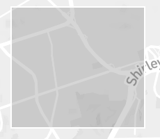

AccessVisDC
Interactive Visual Exploration of Physical Accessibility

Explore the physical accessibility of Washington DC with an interactive map visualization that allows you to color the city with accessibility scores
Data
Using Project Sidewalk's API, we visualize their
accessibility dataset containing >250,000 labels for 1075
miles of DC.
Approach
We use the Overview first Details-on-demand approach to drill down into the accessibility of
a region. The visualization makes use of semantic zooming to show different forms of content
depending on the zoom level. We have three levels: city, neighborhood, and street level.
Through various interaction primitives, each level allows a user to explore the physical
accessibility from different aspects.
Welcome to AccessVisDC!
Interactive Visual Exploration of Physical Accessibility
Start exploring the accessibility of Washington DC by dragging the
cursor into a rectangular box
over the map.

The selected regions will be colored based on their accessibility scores. More information for the
selected regions will be shown on the right sidebar panel.
Click on any specific region to know more about a neighborhood.
Data Coverage: 100%
Average Access Score: 89.7
Know More
Access Scores
0 - 20
20 - 40
40 - 60
60 - 80
80 - 90
90 - 100
Least accessible (low score) to most accessible (high score)